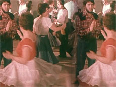

SQUARE DANCE HYPNOTIST

Allan Brown – Kanada 2012 – 17 Min.
B+S+T+P+V: Allan Brown – M: Joost van Balkom
HD – Englisch
In einer ständigen Schleife wird ein Squaredance aufgeführt, der wiederholt um sich selbst kreist. Der Ton wandert von Bahnhofsdurchsagen zu der tragischen Unterhaltung zwischen einem Flüchtigen und einem Polizisten.
Allan Brown, geb. in Kanada. Er ist auch bekannt unter dem Pseudonym Witkacy, und ist Mitglied des Künstlerkollektivs Volatile Works. Zahlreiche experimentelle Kurzfilme.